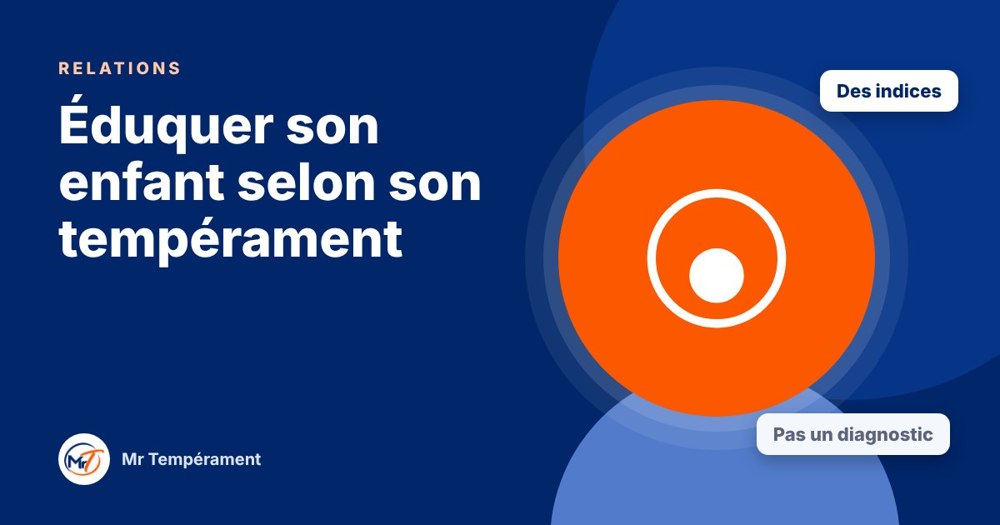

Éduquer son enfant selon son tempérament

Chaque enfant réagit à sa manière. Comprendre ses tendances aide à l'encourager, à le cadrer, et à éviter bien des bras de fer.
Deux enfants élevés dans la même maison, avec les mêmes règles, peuvent réagir de manière très différente. L'un fonce, l'autre observe. L'un parle sans cesse, l'autre se retire. Les tempéraments y sont pour quelque chose. Les connaître aide les parents à ajuster leur manière d'encourager, de reprendre et de rassurer.
Des indices, pas un diagnostic
Les tendances du tempérament peuvent apparaître très tôt, parfois dès les premiers mois, et deviennent plus visibles progressivement, notamment vers 3 à 5 ans. Il faut les lire comme des indices à observer, jamais comme un diagnostic. Un enfant évolue, et son environnement, son éducation et ses expériences comptent énormément.
L'objectif n'est pas d'étiqueter votre enfant, mais de mieux le comprendre pour mieux l'accompagner.
L'enfant Dominant : donner un cadre et des responsabilités
Il a besoin d'agir, de décider, de relever des défis. Il teste les limites pour savoir où elles se trouvent. Donnez-lui un cadre clair, des choix limités (« tu préfères faire cela maintenant ou dans dix minutes ? »), et des responsabilités à sa mesure. Évitez les bras de fer publics : une explication calme porte plus qu'un ordre.
L'enfant Influent : canaliser l'enthousiasme
Il parle, il bouge, il se fait des amis facilement, mais il oublie vite. Encouragez-le sincèrement, aidez-le à finir ce qu'il commence, et utilisez des repères visuels simples (un tableau, un petit rituel). Les rappels bienveillants, répétés avec humour, fonctionnent mieux que les reproches.
L'enfant Stable : rassurer et prévenir
Il aime la routine, les repères et l'harmonie. Les changements le déstabilisent. Annoncez à l'avance ce qui va changer, laissez-lui le temps de s'adapter, et invitez-le à dire ce qu'il ressent : il se tait facilement pour ne pas déranger. Valorisez ses efforts autant que ses résultats.
L'enfant Consciencieux : valoriser l'effort, alléger la pression
Il observe, réfléchit et veut bien faire. Il peut être très dur avec lui-même. Donnez-lui des repères clairs, valorisez l'effort plus que la perfection, et laissez-lui une place pour l'erreur et pour le jeu libre. Dites-lui trois choses positives pour chaque correction.
Et vous, parent ?
Votre propre tempérament influence aussi votre manière d'éduquer. Un parent Dominant peut aller trop vite, un parent Influent peut varier les règles selon l'humeur, un parent Stable peut céder pour éviter les larmes, un parent Consciencieux peut trop corriger. Le connaître, c'est déjà commencer à ajuster.
Rien de tout cela ne vous disqualifie : chaque parent fait de son mieux avec ce qu'il est, et peut apprendre à faire un peu mieux avec ce qu'il comprend.
Pour aller plus loin
Le Bilan DISC 3 domaines, avec le trio Relations, explore votre tempérament dans votre couple, votre parentalité et vos relations sociales, avec une synthèse du trio.
Découvrir le trio Relations